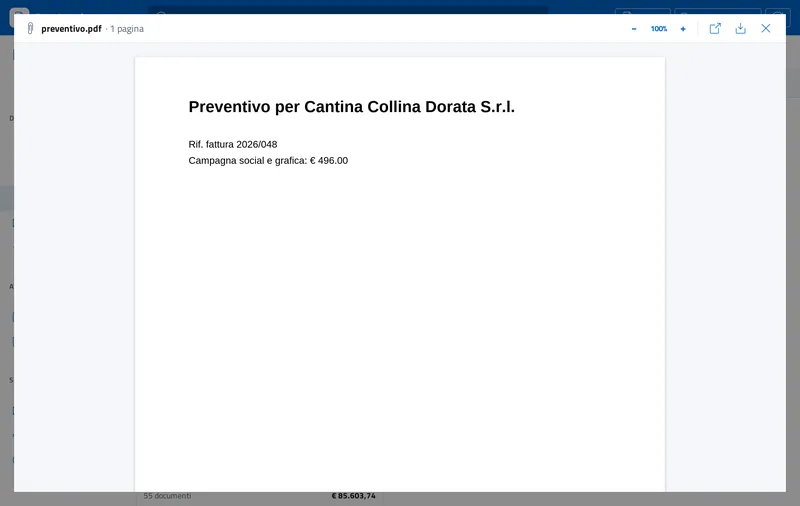

Come convertire una fattura elettronica XML in PDF
Il PDF di una fattura elettronica è una copia di cortesia: è comodo da leggere, stampare o inviare, ma il documento con valore fiscale resta il file XML trasmesso al Sistema di Interscambio. RastInvoice crea il PDF direttamente dal file XML o P7M, senza stampanti virtuali.
I passi
- Apri la fattura. Apri il file .xml o .xml.p7m con RastInvoice, con un doppio clic o trascinandolo nella finestra.
- Scegli la vista. Il PDF segue la vista Moderna. Per una copia con l'impaginazione del foglio di stile ufficiale usa la stampa dalla vista AssoSoftware.
- Crea il PDF. Scegli PDF dall'anteprima: il file viene creato in formato A4 con testo selezionabile e si apre nel visualizzatore integrato.
- Salva o condividi. Dal visualizzatore salvi il PDF dove vuoi o lo apri con il programma predefinito.

PDF della fattura e allegati PDF
Alcune fatture contengono già un PDF allegato dal fornitore. RastInvoice mostra gli allegati nel visualizzatore integrato e permette di salvarli: il PDF creato dal programma invece riporta sempre i dati effettivi del file XML.
Più fatture insieme
Per un elenco di molte fatture usa l'esportazione CSV, che si apre in Excel o LibreOffice con numero, data, soggetto, partita IVA e totale di ogni documento.
Domande frequenti
Il PDF ha valore fiscale?
No. Il documento fiscale è il file XML trasmesso allo SdI; il PDF è una copia di cortesia.
Il testo del PDF si può copiare?
Sì, il PDF creato da RastInvoice ha testo selezionabile.
Serve una stampante PDF?
No, il PDF viene creato direttamente dal programma.